Chapter 4 Fold change and t-test
Load the data, we need multiple replicates for each condition. To be tidy each protein is a set of observations (rows) of the variables, which are the values recorded for each replicate (columns).
Tidy up and deal with missing values, either impute or exclude missing values and normalise.
Let’s consider our proteomics data as a distribution of values, one value for each protein in our experiment that together form a distribution. If we have replicate experiments we’ll therefore have multiple distributions.
A quantile represents a region of distribution, for example the 0.95 quantile is the value such that 95% of the data lies below it. To normalise two or more distributions with each other without recourse to a reference distribution we:
- Rank the value in each experiment (represented in the columns) from lowest to highest. In other words identify the quantiles.
- Sort each experiment (the columns) from lowest to highest value.
- Calculate the mean across the rows for the sorted values.
- Then substitute these mean values back according to rank for each experiment to restore the original order.
This results in the highest ranking observation in each experiment becoming the mean of the highest observations across all experiments, the second ranking observation in each experiment becoming the mean of the second highest observations across all experiments.
Dave Tang’s Blog : Quantile Normalisation in R

Figure 4.1: Quantile Normalisation.
# Tidy data up
dat_tidy <- dat_em %>%
# Remove missing values
drop_na() %>%
# Select and rename columns
select(protein_accession = protein_key_protein_accession,
protein_description,
con1 = protein_ngram_on_column_emilly_bowler_wt_rep1_001_merged_spectrum_ia_final_protein,
con2 = protein_ngram_on_column_emilly_bowler_wt_rep2_001_merged_spectrum_ia_final_protein,
con3 = protein_ngram_on_column_emilly_bowler_wt_rep3_001_merged_spectrum_ia_final_protein,
trt1 = protein_ngram_on_column_emilly_bowler_kogsk_rep1_001_merged_spectrum_ia_final_protein,
trt2 = protein_ngram_on_column_emilly_bowler_kogsk_rep2_merged_ia_final_protein,
trt3 = protein_ngram_on_column_emilly_bowler_kogsk_rep3_001_merged_spectrum_ia_final_protein)
# dat_tidy <- dat_char %>%
# # Remove missing values
# drop_na() %>%
# # Select and rename columns
# select(protein_accession = protein_entry_protein_accession,
# protein_description,
# con1 = 9,
# con2 = 11,
# con3 = 13,
# trt1 = 21,
# trt2 = 23,
# trt3 = 25)
# dat_tidy <- dat_le %>%
# # Remove missing values
# drop_na() %>%
# # Select and rename columns
# select(protein_accession = protein_accession,
# protein_description,
# con1 = 5,
# con2 = 7,
# con3 = 11,
# trt1 = 3,
# trt2 = 9,
# trt3 = 13)
# Plot data
dat_tidy %>%
ggplot(aes(log2(con1))) +
geom_density() +
geom_density(aes(log2(con2), colour = "blue")) +
geom_density(aes(log2(con3), colour = "red"))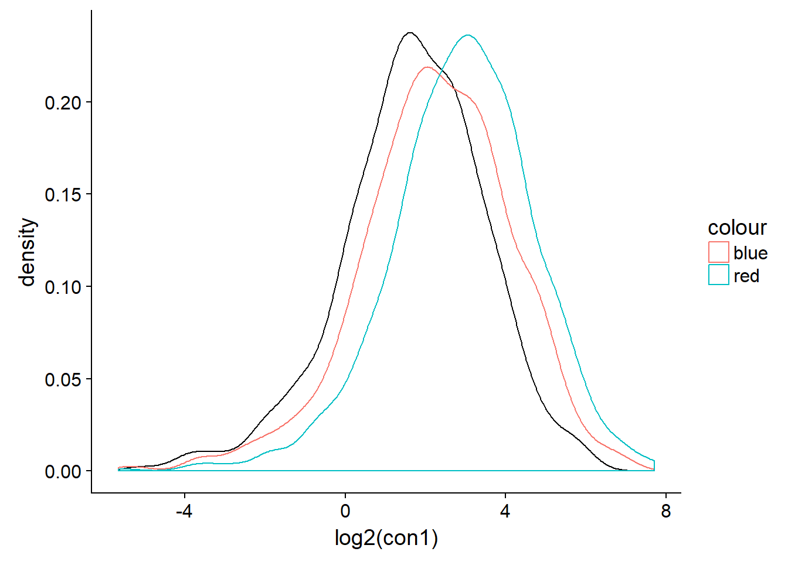
dat_tidy %>%
ggplot(aes(log2(trt1))) +
geom_density() +
geom_density(aes(log2(trt2), colour = "blue")) +
geom_density(aes(log2(trt3), colour = "red"))
# Normalise to maximum column value
dat_norm_max <- dat_tidy %>%
mutate(wt1 = con1/max(con1),
con2 = con2/max(con3),
con3 = con3/max(con3),
trt1 = trt1 / max(trt1),
trt2 = trt2 / max(trt2),
trt3 = trt3 / max(trt3)
)
# Normalise
# dat_rank <- dat_tidy %>% select(-c(1:2,6:8)) %>%
# apply(., 2, rank, ties.method="average") %>% as.data.frame()
#
# dat_sort <- dat_tidy %>% select(-c(1:2,6:8)) %>%
# apply(., 2, sort) %>% as.data.frame()
#
# dat_mean <- dat_sort %>% apply(., 1, mean)
#
# index_mean <- function(my_idx, my_mean){
# return(my_mean[my_idx])
# }
#
# dat_norm <- dat_rank %>%
# apply(.,2,index_mean, my_mean = dat_mean) %>%
# as.data.frame()
# Quantile normalisation : the aim is to give different distributions the
# same statistical properties
quantile_normalisation <- function(df){
#
df_rank <- apply(df,2,rank,ties.method="average")
df_sorted <- data.frame(apply(df, 2, sort))
df_mean <- apply(df_sorted, 1, mean)
index_to_mean <- function(my_index, my_mean){
return(my_mean[my_index])
}
df_final <- apply(df_rank, 2, index_to_mean, my_mean=df_mean) %>% as.data.frame()
#rownames(df_final) <- rownames(df)
return(df_final)
}
#dt_con <- dat_tidy %>% select(-c(1:2,6:8))
#dt_trt <- dat_tidy %>% select(-c(1:5))
#dt_con_norm <- quantile_normalisation(dt_con)
#dt_trt_norm <- quantile_normalisation(dt_trt)
dt <- dat_tidy %>% select(-c(1:2)) %>% quantile_normalisation()
dat_norm <- bind_cols(dat_tidy[,1:2],dt)
#dat_norm <- bind_cols(dat_tidy[,1:2],dt_con_norm,dt_trt_norm)
# Have a look at the median normalised data
glimpse(dat_norm)## Observations: 1,095
## Variables: 8
## $ protein_accession <chr> "4562_DHE3_HUMAN", "14948_RS2_HUMAN", "143...
## $ protein_description <chr> "Glutamate dehydrogenase 1_ mitochondrial ...
## $ con1 <dbl> 8.7383500, 24.6381167, 0.6251333, 9.166716...
## $ con2 <dbl> 11.8365000, 28.3875333, 0.7185167, 11.9014...
## $ con3 <dbl> 8.666500, 31.284083, 0.646800, 4.532583, 5...
## $ trt1 <dbl> 13.337283, 14.171300, 1.584183, 5.452217, ...
## $ trt2 <dbl> 0.8607500, 14.4218000, 1.0512833, 4.244433...
## $ trt3 <dbl> 9.343483, 13.670950, 2.139083, 4.735550, 6...dat_norm %>%
ggplot(aes(log2(con1))) +
geom_density() +
geom_density(aes(log2(con2), colour = "blue")) +
geom_density(aes(log2(con3), colour = "red")) +
geom_density(aes(log2(trt3), colour = "green"))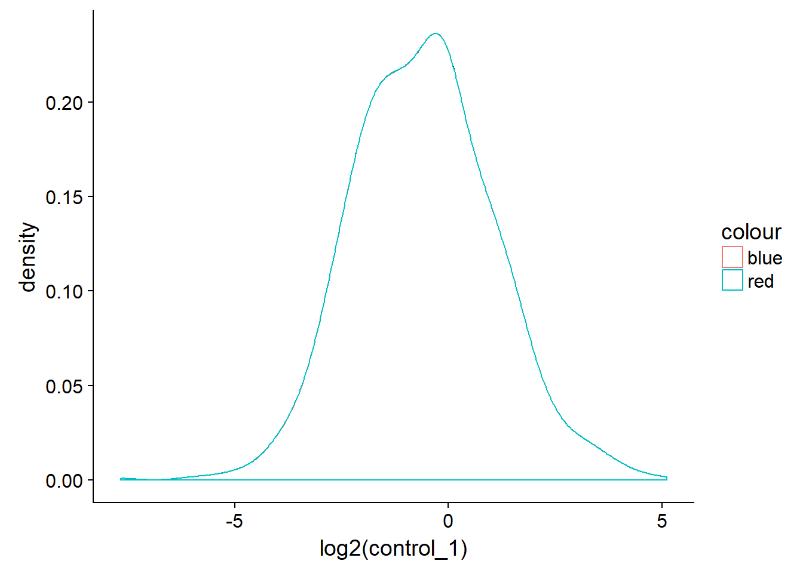
# Save the median normalised data
write_excel_csv(dat_norm,"data/example_nomralised_proteomics_data.csv")- Use
t.testto perform Welch Two Sample t-test on untransformed data. This outputs the p-values we need for each protein.
# T-test function for multiple experiments
expriments_ttest <- function(dt,grp1,grp2){
# Subset control group and convert to numeric
x <- dt[grp1] %>% unlist %>% as.numeric()
# Subset treatment group and convert to numeric
y <- dt[grp2] %>% unlist %>% as.numeric()
# Perform t-test
result <- t.test(x, y)
# Return p-values
return(result$p.value)
}
# Apply t-test function to data
# array = dat, 1 = rows, FUN = expriments_ttest, and arguements
# For median normalised data
p_vals <- apply(dat_norm,1,expriments_ttest, grp1 = c(3:5), grp2 = c(6:8))
# For maximum normalised data
p_vals_max <- apply(dat_norm_max,1,expriments_ttest, grp1 = c(3:5), grp2 = c(6:8))
# Plot histograms
hist(p_vals)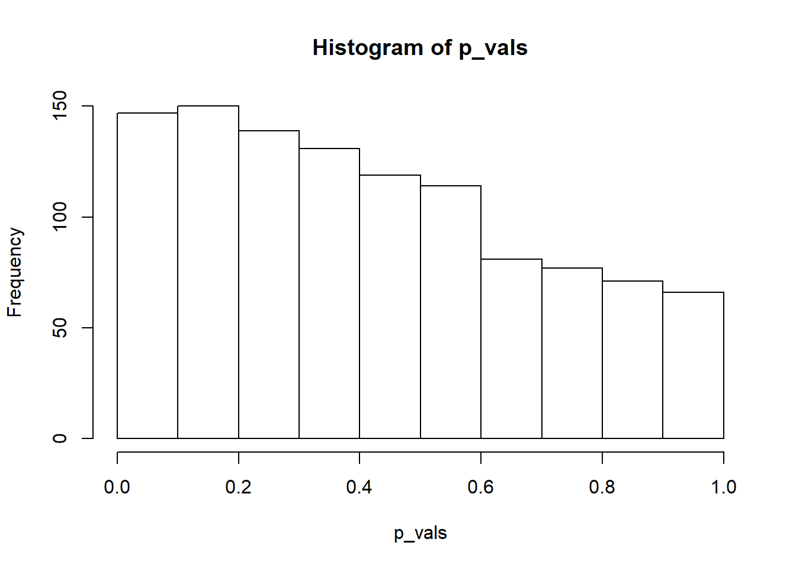
hist(p_vals_max)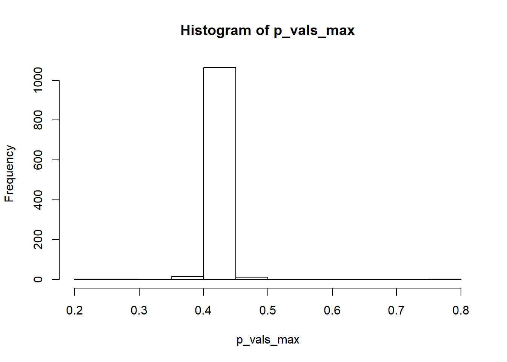
- Perform log transformation of the observations for each protein.
# Select columns and log data
dat_log <- dat_norm %>%
select(-c(protein_accession,protein_description)) %>% log2()
dat_max_log <- dat_norm_max %>%
select(-c(protein_accession,protein_description)) %>% log2()- Calculate the mean observation for each protein under each condition.
con <- apply(dat_log[,1:3],1,mean)
trt <- apply(dat_log[,4:6],1,mean)
con_max <- apply(dat_max_log[,1:3],1,mean)
trt_max <- apply(dat_max_log[,4:6],1,mean)- The log fold change is then the difference between condition 1 and condition 2. Plot a histogram to look at the distribution.
# Calculate fold change
dat_fc <- con - trt
dat_max_fc <- con_max - trt_max
# Plot histograms
hist(dat_fc)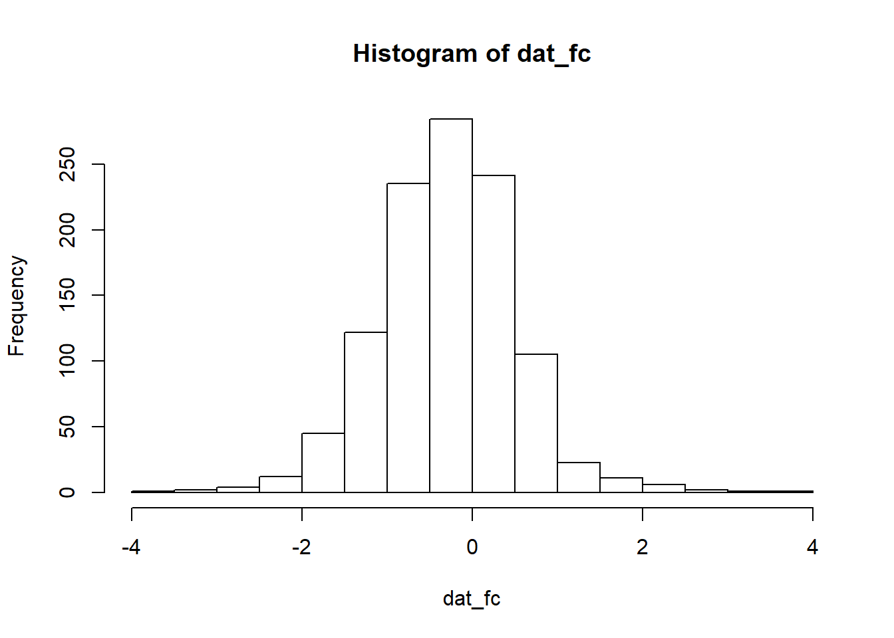
hist(dat_max_fc)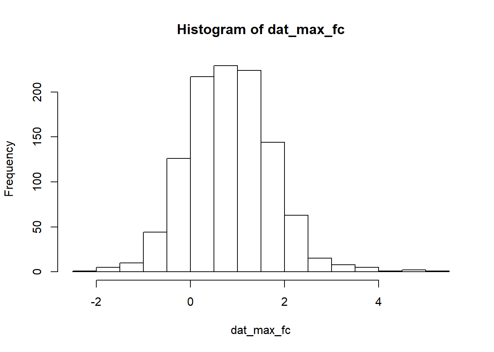
- Create a combined table of log fold change and p-values for all the proteins for plotting a volcano plot.
dat <- data.frame(prots= dat_norm$protein_accession,
logfc = dat_fc,
pval = -1*log10(p_vals))
dat_max <- data.frame(prots= dat_norm_max$protein_accession,
logfc = dat_max_fc,
pval = -1*log10(p_vals_max))
dat_max %>% ggplot(aes(logfc,pval)) + geom_point()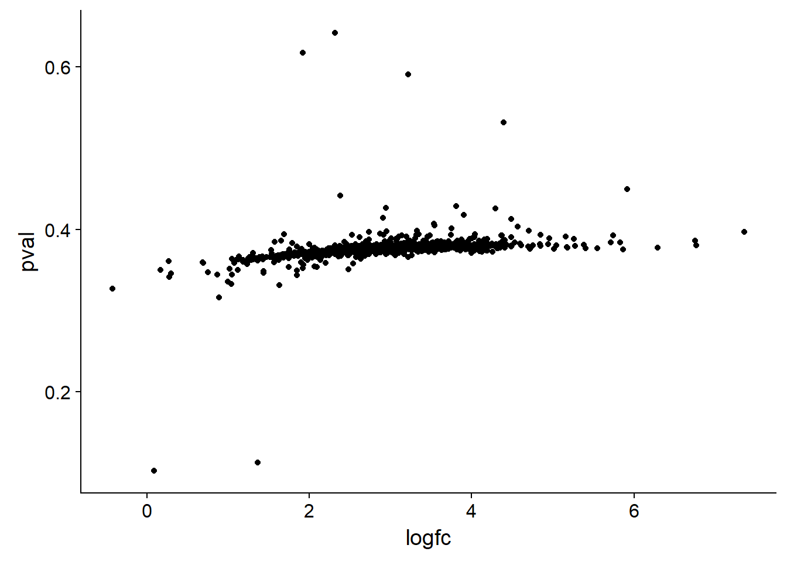
dat %>%
mutate(threshold = if_else(logfc >= 2 & pval >= 1.5 |
logfc <= -2 & pval >= 1.5,"A", "B")) %>%
ggplot(aes(logfc,pval, colour = threshold)) +
geom_point() +
scale_colour_manual(values = c("A"= "red", "B"= "black")) +
xlab("log2 fold change") + ylab("-log10 p-value") +
theme_minimal()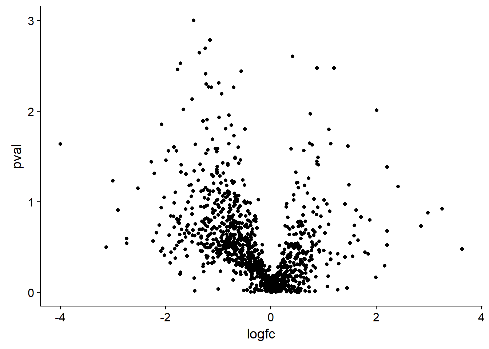
4.1 Heatmap transformation
- Clustering the data
dat_mut <- dat_norm %>%
mutate(pval = dat$pval, logfc = dat$logfc) %>%
filter(pval >= 2 & (logfc >=2 | logfc <= 2)) %>%
select(-c(2,9:10))
dat_sel <- as.matrix.data.frame(dat_mut[,2:7]) %>% log2()
row.names(dat_sel) <- dat_mut$protein_accession
dat.tn <- scale(t(dat_sel)) %>% t()
#dat.tn <- t(dat.n)
#dat.tn <- dat_sel
#gplots::heatmap.2(dat.tn, scale = 'row',trace="none")
library(pheatmap)
pheatmap(dat.tn,cutree_rows = 2,
cutree_cols = 2)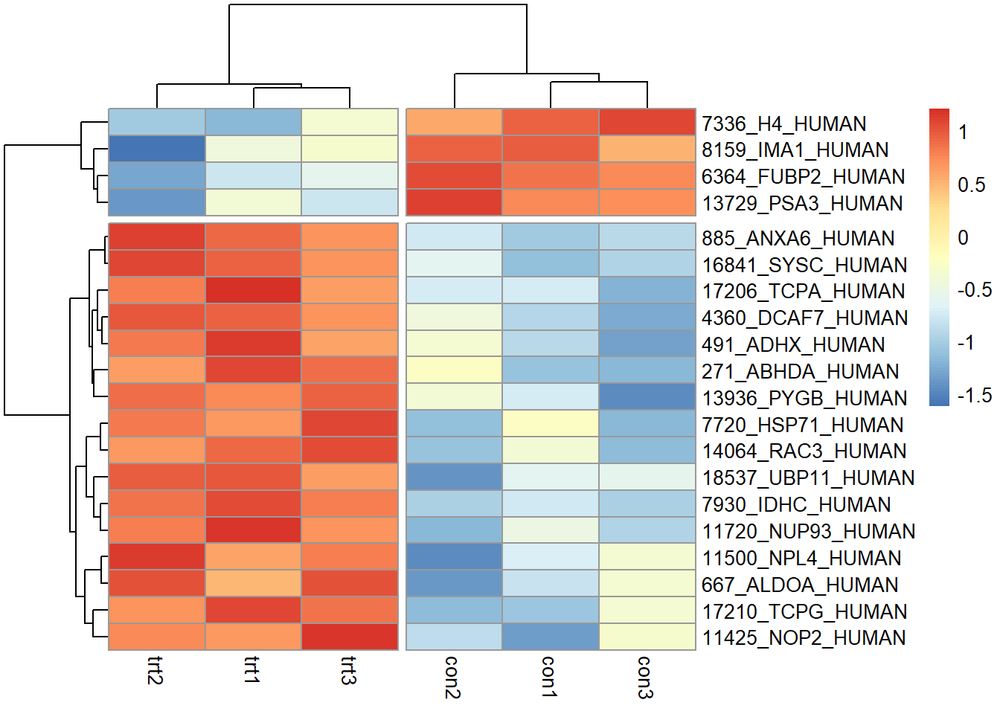
cal_z_score <- function(x){
(x - mean(x)) / sd(x)
}
data_subset_norm <- t(apply(dat_mut[,2:7], 1, cal_z_score))
row.names(data_subset_norm) <- dat_mut$protein_accession
pheatmap(data_subset_norm)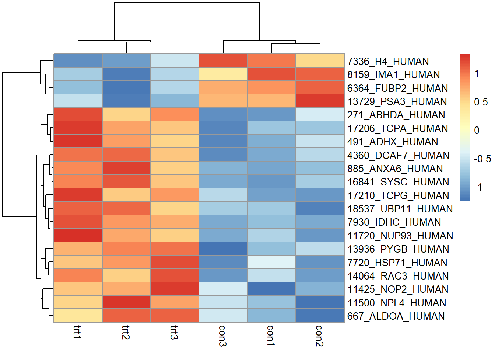
d1 <- dat.tn %>% t() %>%
dist(.,method = "euclidean", diag = FALSE, upper = FALSE)
d2 <- dat.tn %>%
dist(.,method = "euclidean", diag = FALSE, upper = FALSE)
# Clustering distance between experiments using Ward linkage
c1 <- hclust(d1, method = "ward.D2", members = NULL)
# Clustering distance between proteins using Ward linkage
c2 <- hclust(d2, method = "ward.D2", members = NULL)
# Check clustering by plotting dendrograms
par(mfrow=c(2,1),cex=0.5) # Make 2 rows, 1 col plot frame and shrink labels
plot(c1); plot(c2) # Plot both cluster dendrograms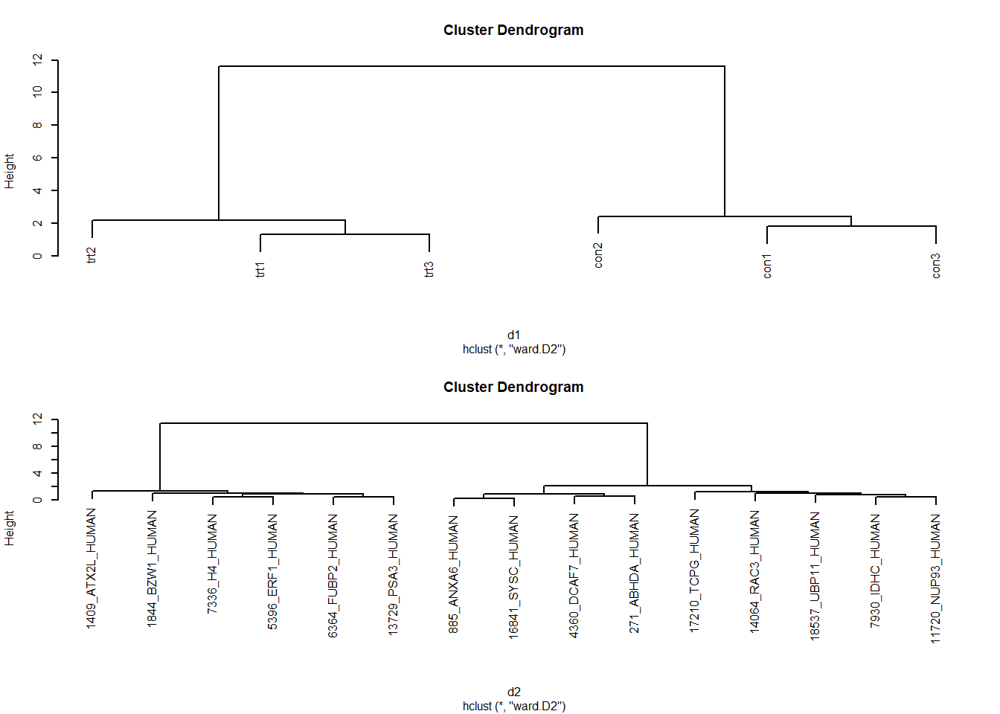 2. Plot the data
# Set colours for heatmap, 25 increments
my_palette <- colorRampPalette(c("blue","white","red"))(n = 25)
# Plot heatmap with heatmap.2
par(cex.main=0.75) # Shrink title fonts on plot
gplots::heatmap.2(dat.tn, # Tidy, normalised data
Colv=as.dendrogram(c1), # Experiments clusters in cols
Rowv=as.dendrogram(c2), # Protein clusters in rows
density.info="histogram", # Plot histogram of data and colour key
trace="none", # Turn of trace lines from heat map
col = my_palette, # Use my colour scheme
cexRow=0.5,cexCol=0.75) # Amend row and column label fonts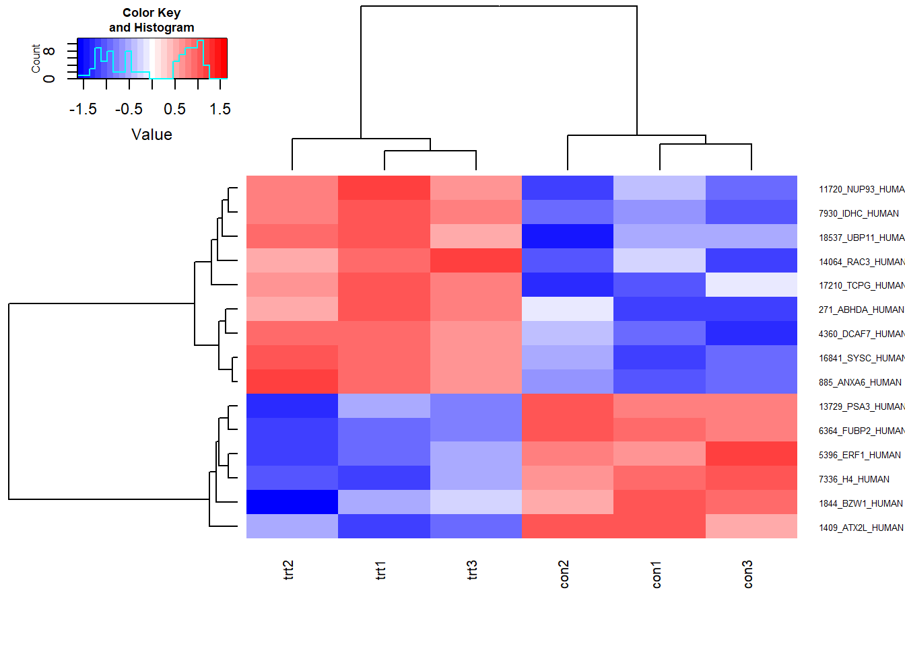